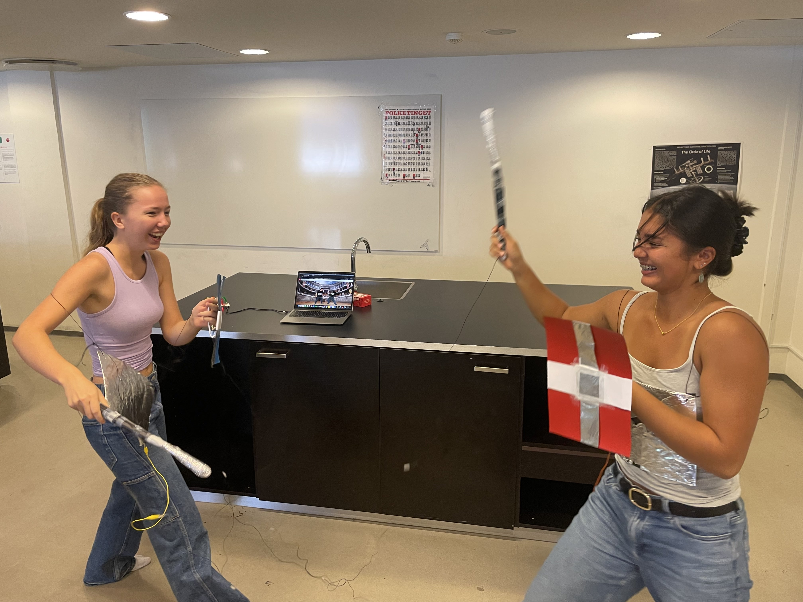

Spil, Leg og Samarbejde
Introduktion
Vores første forløb omhandler Spil, Leg og Samarbejde
Stigningen af børn, som bruger internettet og spiller computer, betyder at færre og færre bevæger sig.
Vores projekt tager udgangspunkt i at bekæmpe ild med ild, og vi har derfor programeret et spil, hvor bevægelse er centralt.
Til dette bruger vi en "Makey Makey", som gør det muligt at få genstande til at fungere som knapper på computeren, ved at tilslutte dem via Makey Makey
Vi har designet og fremstillet 2 fysiske sværd, samt 2 fysiske mave-plader.
De kan tilsluttes computeren, så når en maveplade bliver ramt af et sværd, bliver det registreret som et tryk på venstre eller højre piletast afhængig af, hvem bliver ramt.
Spillet mister lidt af sin charme uden disse rekvisitter, men man kan eventuelt fremstille noget lignende derhjemme, eller blot bruge piletasterne, når man prøver spillet herunder:
Prøv spillet her
Krav til Projektet
- Kan spilles af to eller flere personer, der fysisk er i nærheden af hinanden.
- Involverer et samarbejdende eller konkurrerende element, gerne inspireret af sport.
- Styres med Makey Makey og ikke direkte fra computeren.
Fægtespillet
Jeg har i denne omgang samarbejdet med Oskar fra 2022j om dette fægtespil.
Æstetik
Her ser vi spillet i praksis som viser 2 personer, som spiller mod hinanden, som begge er i fuld gang med bevægelse, og har det oven i købet sjovt samtidig:

På billedet kan vi også se sværdene og mavepladerne være tilsluttet til computeren via Makey Makey.
Designet af sværd og maveplader tager grobund i en gammeldags gladiator-stil, som hjælper spillere med at føle sig integreret i spillet.
Features
- En tæller kan ses i øverst i hhv. højre og venstre hjørne, som viser hvor mange gange en spiller har ramt den anden.
- Når en spiller bliver ramt, høres et skrig fra den spiller, samt et billede bliver vist af dem blive ramt. Nedenfor ses fx. Oskar blive ramt.
- Der bliver spillet dramatisk baggrundsmusik, og der bliver fægtet i et storslået stadion, hvilket yderligere motiverer til at bevæge sig og engagere sig i spillet.

Kode

Her ser vi koden som holder styr på scores i hjørnerne.
Variablen "hit1" indikerer på den ene karakters score, mens "hit2" indikerer den modstående karakters score.
Vi kan se at hvis venstre piletast bliver trykket på, vil denne variabel stige med 1. Venstre piletast er som sagt tilsluttet Makey Makey, så det er altså tilsvarende til, at score går 1 op hver gang, man slår den anden.
Samme mekanisme gør sig gældende med højre piletast og "hit2".
Når der bliver registreret et tryk på højre eller venstre piletast, bliver der også kaldt på funktionerne hhv. "SoundEffect1" og Soundeffect2"
Dette er så der er forskellige lyde tilknyttet, afhængig af, hvem bliver ramt.

Funktionerne har til formål at vælge på tilfældig vis 1 af 3 lyde (krigsbrøl), som skal afspilles, når en spiller bliver ramt.
Vi definerer en variabel n, som værende et tilfældigt helt tal mellem 0 og 2. Derefter plusser vi med 1, så vi får et tilfældigt heltalt mellem 1 og 3, altså enten 1, 2 eller 3.
Nedenunder ser vi så at der bliver spillet 1 af 3 lydeffekter, afhængig af n's værdi.
"Soundeffect2" fungerer på præcis samme måde, men der bliver valgt imellem 3 andre lydeffekter.
Rutediagram
Her ses dette vist som et rutediagram: